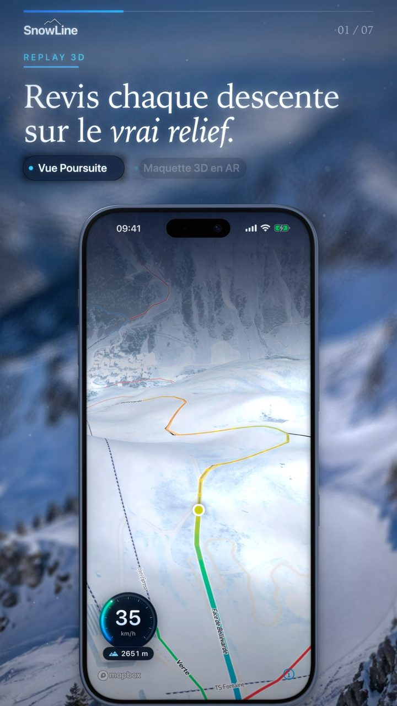

Sans sortir le téléphone
Ta session en direct sur l'écran verrouillé et dans la Dynamic Island.
Replay 3D de chaque descente, ta vitesse tracée sur la montagne, alerte de chute. SnowLine note tout toute seule, pendant que ton iPhone reste dans ta poche.
Télécharger sur l'App StoreL'aperçu de l'app, du tableau de bord au replay 3D. Mets le son.

Une caméra te suit dans la montagne avec ta vitesse en direct. Pose une maquette 3D de ta descente sur la table et fais-la tourner du bout du doigt.
Relief réel, trace du bleu au rouge selon la vitesse. Vues Poursuite, Amont et Haute, plus le mode Cinéma.
Retrouve ta distance, ton dénivelé et ta meilleure descente en un regard.
Du bleu au rouge, virage après virage, sur une carte de relief d'hiver avec les pistes et remontées de la station et leurs noms.
Altitudes de départ et d'arrivée de chaque piste et remontée. Cartes hors connexion : la station reste lisible sans réseau.
Ta session en direct sur l'écran verrouillé et dans la Dynamic Island.
Après un choc suivi d'une immobilité, SnowLine te demande si tout va bien.
Crée un groupe, invite tes amis et compare vitesse max, dénivelé et distance dans un classement.
Un geste sur « Vidéo » et SnowLine filme ta descente : 20 secondes sur le vrai relief, avec ta vitesse sur la jauge.
Pistes et remontées de milliers de stations, avec leurs noms.
Pas de compte SnowLine. Tes traces et tes données de santé restent sur ton iPhone. Si tu crées un groupe, seuls ta vitesse max, ton dénivelé et ton nombre de descentes sont partagés, via iCloud.
Tes journées de ski enregistrées comme séances, sans doublon avec ton Apple Watch.
Le risque d'avalanche vient uniquement des bulletins officiels, relayés tels quels.
Premium t'est offert pendant trois saisons.
Merci d'être là dès le début. Toutes les fonctions Premium, actuelles et à venir, sont offertes aux skieurs qui installent SnowLine avant cette date, jusqu'à la fin de la saison 2028-29. Rien à faire : l'app le détecte seule.